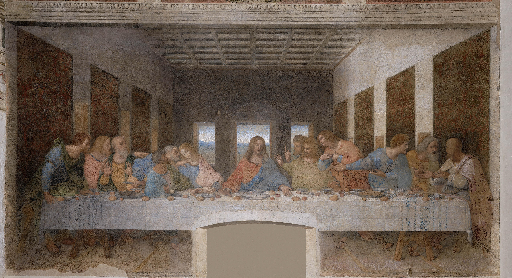

Dettagli su L'Ultima Cena
- Artista: Leonardo da Vinci
- Anno: 1495–1498
- Dimensioni: 460 cm × 880 cm
- Tecnica: Tempera e olio su intonaco
- Luogo: Convento di Santa Maria delle Grazie, Milano, Italia
- Curiosità:
- L'Ultima Cena è uno dei dipinti più celebri al mondo, raffigurante l'ultimo pasto di Gesù Cristo con i suoi apostoli.
- Il dipinto mostra il momento in cui Gesù rivela che uno dei suoi discepoli lo tradirà.
- La composizione e l'uso della prospettiva sono considerati innovativi per l'epoca.
Torna al Museo Virtuale
